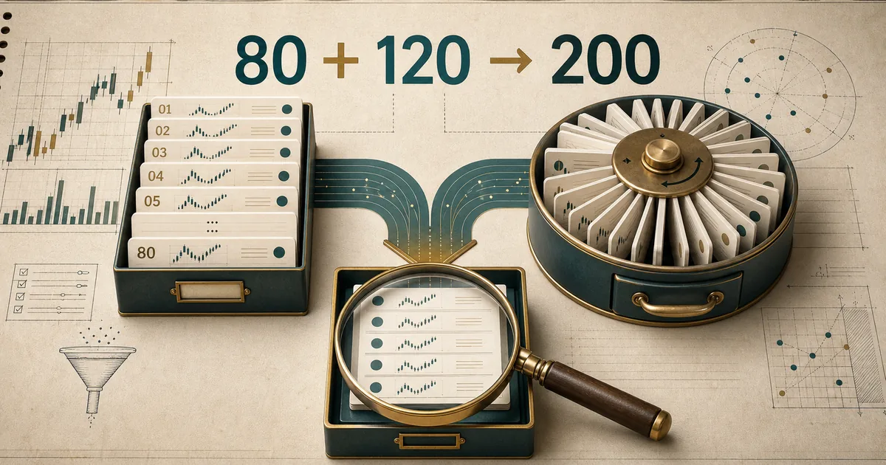
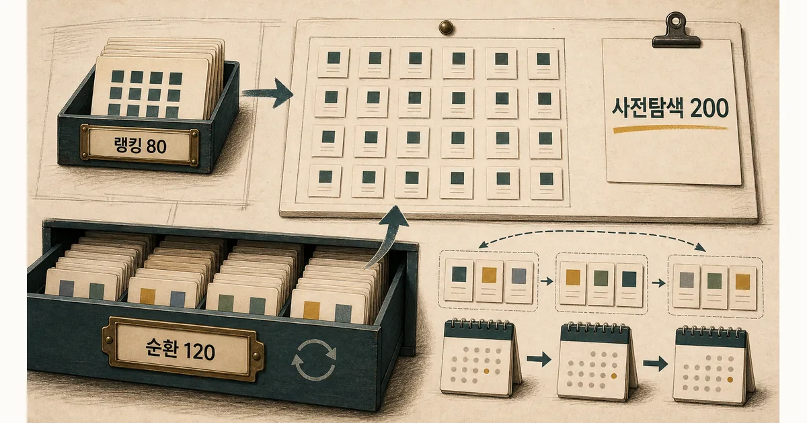
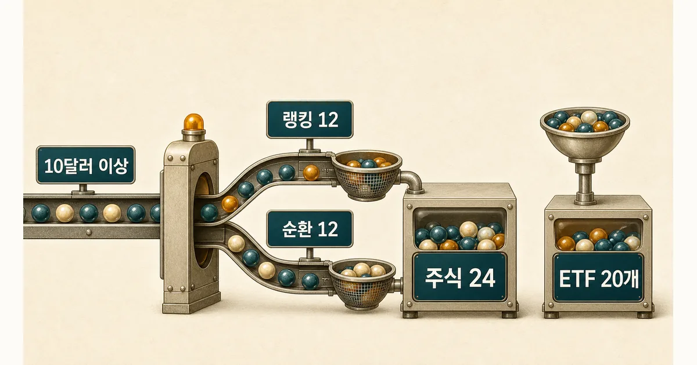

처음에는 거래가 많거나 많이 오른 종목의 순위만 모으면 좋은 후보를 찾을 수 있다고 생각했다. 하지만 며칠 돌려 보니 이미 크게 움직인 익숙한 종목만 반복됐고, 순위 밖의 조용한 종목은 비교 대상에도 들어오지 못했다. 반대로 미국주식 전체를 매번 자세히 확인하면 데이터 한도가 먼저 막혔다. 그래서 ‘지금 주목받는 종목’과 ‘아직 순위에 없는 종목’을 제한된 비용 안에서 함께 보는 후보 수집 구조부터 만들었다.

모의투자부터 시작한 주식 앱 제작기 · 1편
30초 요약
- 인기 순위만 보면 이미 크게 움직인 익숙한 종목만 반복해서 보게 됐다.
- 시장 관심 종목 80개와 순위 밖 종목 120개를 섞어 탐색 범위를 넓혔다.
- 모든 종목을 깊게 보는 대신, 먼저 200개를 훑고 44개만 자세히 확인한다.
먼저 알아둘 말
- 랭킹
- 거래대금이나 상승률처럼 한 기준으로 종목을 세운 순위다.
- 종목 마스터
- 거래 가능한 종목의 기본 정보를 모아 둔 전체 목록이다.
- 정밀 조회
- 가격만 훑는 것보다 많은 데이터를 사용해 호가와 과거 가격까지 확인하는 단계다.
- 스프레드
- 사려는 가격과 팔려는 가격 사이의 차이로, 실제 거래 비용에 영향을 준다.
- ETF
- 여러 자산을 한 묶음으로 담아 주식처럼 거래하는 상품이다.
실제 구현과 확인 결과
랭킹 1위가 매수 1순위는 아니었다
처음에는 거래대금과 상승률 순위만 모으면 괜찮은 주식을 찾을 수 있다고 생각했다. 시장의 관심이 몰린 종목을 빠르게 볼 수 있으니 자연스러운 출발이었다. 그런데 며칠 돌려 보니 이미 크게 움직인 익숙한 종목이 여러 순위에 겹쳐 나타났고, 순위 밖 종목은 비교 대상에도 들어오지 못했다. 순위는 시장의 현재 관심을 보여 주지만 시장 전체를 대신하지는 않았다.
그렇다고 미국주식 전체를 매번 가격, 매수·매도 호가, 과거 가격까지 자세히 볼 수도 없었다. 데이터 요청과 실시간 연결 한도가 먼저 바닥났고, 느려진 수집은 필요한 가격을 오래된 값으로 만들었다. 이 경험이 앱을 만든 직접적인 계기였다. 화려한 추천 점수보다 ‘제한된 비용으로 어디까지 넓게 보고, 어디부터 깊게 볼 것인가’를 먼저 풀어야 했다.
첫 후보군은 랭킹 80개와 순환 120개다
현재 수집기는 실시간 거래대금, 실시간 거래량, 하루 상승률, 하루 하락률, 토스 거래대금, 토스 거래량까지 여섯 랭킹 레인을 읽는다. 같은 종목이 여러 레인에 나오면 중복을 제거하고 최대 80개까지만 랭킹 후보로 남긴다. 이 80개는 ‘지금 시장이 보고 있는 종목’에 가깝다.
- 순서 만들기 — 날짜와 종목 코드를 섞어 같은 날에는 같은 후보 순서를 다시 만들 수 있게 한다.
- 후보 정리 — 랭킹에 이미 들어온 종목과 비활성 종목, ETF를 제외한다.
- 120개 선택 — 남은 활성 보통주를 점수순으로 정렬해 앞의 120개를 사전탐색에 넣는다.

나머지 120개는 활성 보통주 종목 마스터에서 고른다. 날짜 키와 종목 코드를 해시한 점수로 정렬하기 때문에 같은 날에는 같은 결과가 재현되고 날짜가 바뀌면 탐색 구간도 달라진다. 무작위처럼 보이지만 실행할 때마다 흔들리는 난수는 아니다. 나중에 왜 그 종목을 봤는지 다시 확인할 수 있는 결정적 순환이다.
두 목록을 섞은 이유는 역할이 다르기 때문이다. 랭킹만 쓰면 빠르지만 이미 주목받은 종목에 갇히고, 순환만 쓰면 시장의 당일 관심을 놓칠 수 있다. 랭킹 80개는 민감도를, 순환 120개는 발견 범위를 담당한다. 합계 200개는 현재 가격 일괄 조회 한 번에 넣을 수 있는 상한과도 맞는다.
가격만 아는 단계에서 유동성을 지어내지 않는다
사전 탐색 200개에는 먼저 비교적 값싼 가격 조회만 쓴다. 개별주는 10달러 이상인지 확인하고, 순위 후보는 하루 거래대금이 2천만 달러 이상인 경우만 다음 단계에 올린다. 순위 밖에서 고른 후보는 아직 거래대금을 모른다. 그렇다고 0이나 평균값으로 지어내지 않고 ‘아직 모르는 값’으로 남긴 뒤, 자세한 조회가 끝나면 확인한다.
| 단계 | 후보 수 | 확인한 값 | 아직 판단하지 않는 값 |
|---|---|---|---|
| 랭킹 수집 | 최대 80 | 레인·순위·실제 거래대금 | 정밀 호가·일봉 구조 |
| 종목 마스터 순환 | 최대 120 | 활성 여부·보통주 여부 | 거래대금·스프레드 |
| 가격 사전탐색 | 합계 최대 200 | 현재 가격·10달러 기준 | 호가 스프레드·호가 잔량 |
| 정밀 조회 | 주식 24 + ETF 20 | 호가·일봉·실제 유동성 | 최종 매수 판단 |
순위 밖 후보의 거래 가능성은 자세한 조회 뒤에 판단한다. 앱의 개별주 전략(S1)은 가격 10달러 이상, 매수·매도 가격 차이 0.4%(40bp) 이하, 거래대금 2천만 달러 이상을 요구한다. 핵심은 아직 없는 값을 그럴듯한 숫자로 채우지 않는 것이다. 후보를 넓게 모으는 규칙과 거래 가능성을 확인하는 규칙을 나눠야 누락과 오판을 구분할 수 있다.
24개를 12+12로 나누는 이유가 있다
가격 사전탐색을 통과한 개별주를 단순 점수순으로 24개만 고르면 랭킹 후보가 다시 앞자리를 독차지할 수 있다. 그래서 정밀 조회 자리도 랭킹 12개와 순환 12개로 따로 확보했다. 순환 후보가 랭킹 후보보다 점수가 조금 낮더라도 최소한 호가와 일봉을 확인할 기회를 보장하는 장치다.

개별주 24개와 ETF 20개, 합계 44개에는 체결 시세와 호가 두 종류를 구독한다. 44개에 두 토픽을 곱한 88개는 현재 100개 토픽 상한 안에 들어온다. 숫자 24와 20은 보기 좋은 비율이 아니라 실시간 데이터 예산을 넘지 않기 위해 역산한 결과다. 상한이 바뀌면 이 숫자도 다시 검토해야 한다.
ETF 20개는 랭킹 종속에서 뺀다
ETF는 개별주 랭킹에서 우연히 잡히기를 기다리지 않는다. 전략이 관찰할 고정 ETF 풀에서 최대 20개를 별도로 골라 정밀 조회한다. 정밀 데이터가 들어오면 ETF 전략 S2는 스프레드 15bp 이하와 거래대금 5천만 달러 이상 같은 더 엄격한 유동성 관문을 적용한다.
개별주와 ETF를 같은 후보 점수에 섞지 않은 이유도 같다. 개별주는 시장의 당일 관심과 랭킹 밖 발견을 함께 보지만, ETF는 미리 정한 시장·섹터 묶음 안에서 상태 변화를 추적한다. 서로 다른 질문을 한 순위표로 합치면 어떤 규칙이 후보를 선택했는지 설명하기 어려워진다.
후보 수집과 매수 판단은 다른 단계다
- 랭킹 80개는 거래대금·거래량·등락률 등 현재 시장의 관심을 빠르게 포착한다.
- 순환 120개는 활성 보통주 전체를 날짜별로 나눠 보며 랭킹 편향을 줄인다.
- 사전탐색 200개에는 싼 가격 조회를 먼저 써서 정밀 요청을 아낀다.
- 정밀 조회 자리는 랭킹 주식 12개와 순환 주식 12개로 분리해 발견 기회를 보존한다.
- ETF 20개는 별도 레인에서 조회하며, 후보가 됐다는 사실만으로 매수 신호로 취급하지 않는다.
이 숫자를 논문에서 가져온 것은 아니다. Barber와 Odean은 눈에 띄는 종목에 매수가 쏠릴 수 있음을 보였다. Lee와 Swaminathan은 과거 거래량이 가격 흐름을 구분하는 정보가 된다고 설명했다. 그래서 순위는 버리지 않되 전체 후보라고 착각하지 않았다. 다른 유동성·거래비용 연구도 거래대금과 매수·매도 가격 차이를 따로 볼 질문을 줬다.
80·120·24·20은 논문이 제시한 정답이 아니라 현재 데이터 요청과 실시간 연결 한도에 맞춰 시험 중인 값이다. 후보 경계를 확인하는 테스트 11개는 모두 통과했지만, 이것이 수익성을 증명하지는 않는다. 다음 편에서는 후보 200개에서 너무 싼 종목, 거래하기 어려운 종목, 당일 급등한 종목을 어떤 순서로 빼고 실제 분석 대상을 남기는지 이어간다.
이 글은 미국주식 수집·선정 소프트웨어의 구현 기록이며 투자 자문이나 종목 추천이 아니다. 모의투자 결과와 테스트는 실제 투자 성과를 보장하지 않는다.